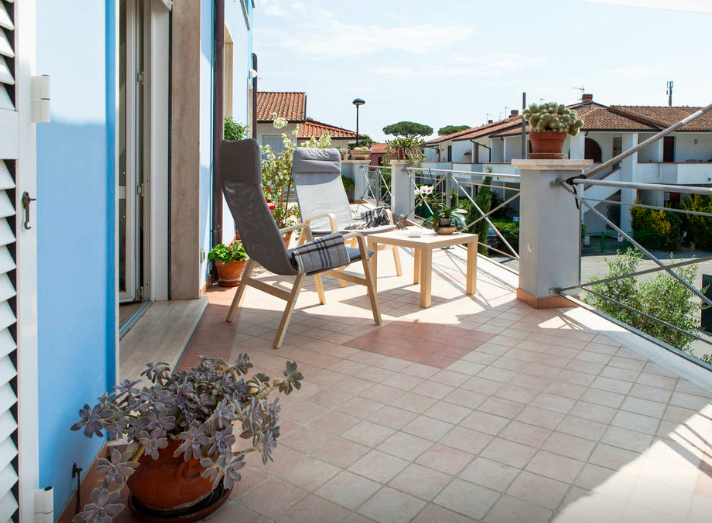

One bedroom Loft with huge windows and lots of natural light, located in the seaside village of Torre del Lago. The Loft is in a quiet central area, close to the sand dunes beach, the woods natural reserve park, the lake, and the Puccini museum.
Eco-friendly and cozy 1 bedroom 1 bathroom Loft in the heart of Torre Del Lago. There is also 1 sleeper sofa in the living room, so the Loft can accommodate 3 people comfortably.
The interior design was curated by the owner who hand-made the furniture using non-treated, natural woods. With the furniture unique wood pieces and the abundant natural light, this Loft set the perfect mood for your summer escape.
The location is near the sea (10 mins by bike and 5 mins by car) and close to the renowned restaurants on the Marina and around the Lake.
A big attraction is the Puccini Villa, the house of the composer located just in front of the Lake. The Puccini Festival and the Jazz Festival are in town and you can easily reach them by bike or car. The nearby city of Viareggio (less than a 15 minutes car ride) offers all the charm of the “Riviera Versilia” with tons of boutiques, restaurants and nightlife. The best way to travel is by bike or car, but if you walk down the road you find the bus stop that connects to the Marina and the Lake.
Guests have access to the entire Loft and bed sheets, blankets, towels, and utensils are provided. Check out the list of amenities.